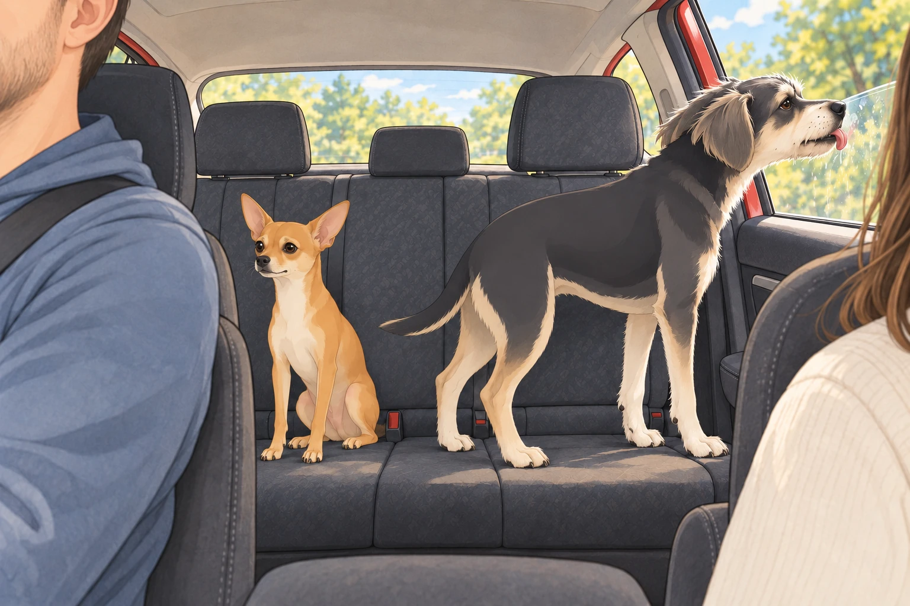
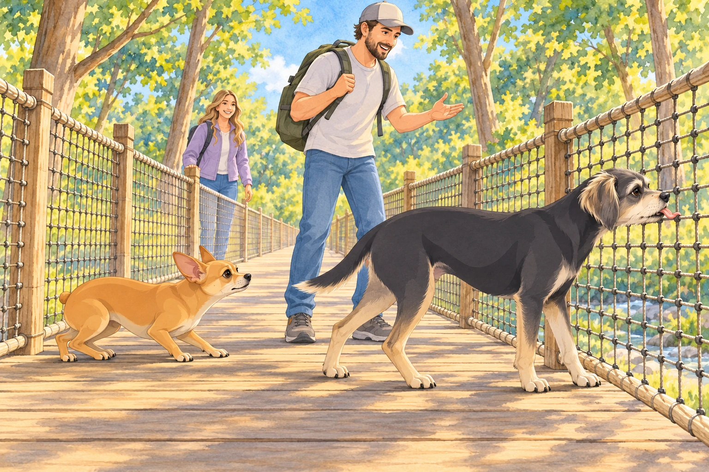
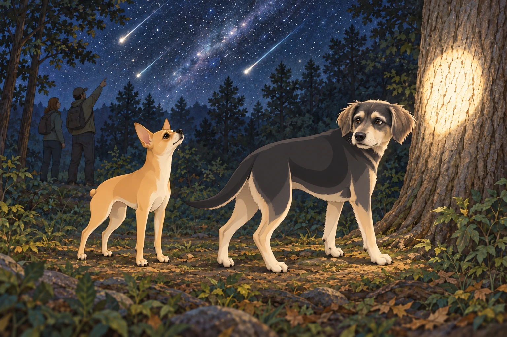
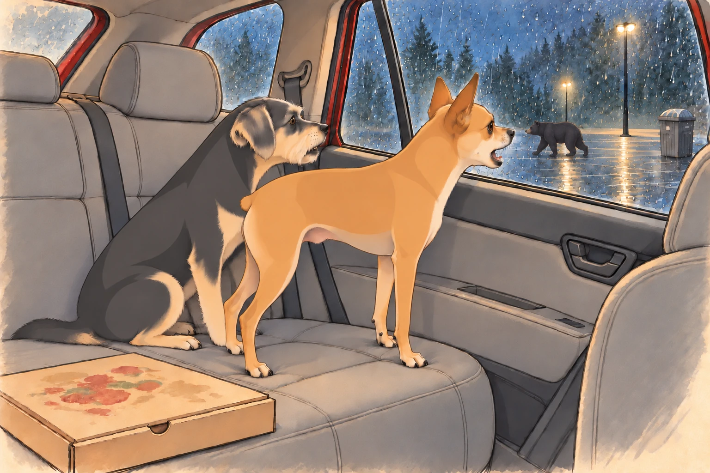
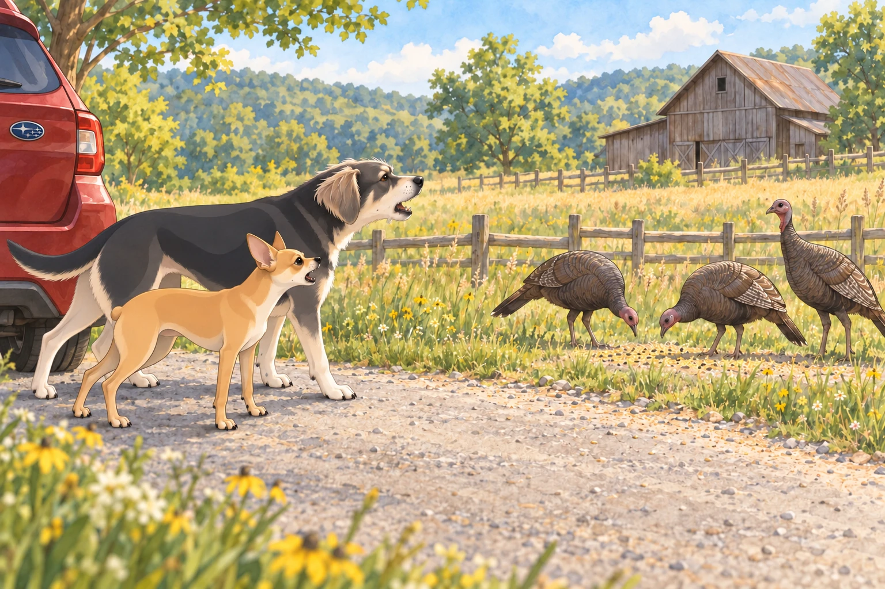

I. The Great Departure
The royal chariot— otherwise known as a red Subaru Outback— purred down I-75, windows rolled down, mountain air whipping Buddy’s ears into a frenzy and flattening Neet’s fur into what could only be called “fashion-forward panic.” Sagar followed the GPS. Heather had her sunglasses, her playlist, and a hand ready to turn the music down whenever Neet began another road report.
Neet, ever the anxious soul, sat rigidly between the back seats, already suspicious of mountain roads, large pine cones, and Tennessee’s “unpredictable rural internet.” Buddy, on the other hand, was licking the window and taking in the smells of Adventure, Car Snacks, and Imminent Chaos. Every time Heather turned the music back up, Neet found another pine cone to report.

II. The Rise to Anakista: Chondola Challenge
After conquering Gatlinburg’s notorious traffic and parking lot minotaurs, the family found themselves staring up at the mountain, at the base of the Anakista theme park.
Sagar beamed. “We’re going up in a Chondola. An open-air chairlift. The views will be epic!”
Heather and Neet eyed the dangling seats suspiciously.
Buddy tried to sniff the cable. “What is this? Is this a food ride?”
Heather, placing her faith in Sagar’s calm, followed him through the turnstile. Neet muttered, “What is OSHA? Why aren’t there walls?”
The four of them settled onto the Chondola. With a gentle lurch, it took off. Sagar, a vision of serenity, pointed out distant peaks. “Look, Heather! That’s Mount LeConte. Neet, Buddy, see that river snaking through the valley?”
Heather gripped the bar. “Uh huh. Mhm. Beautiful. Wow. Yep.” She smiled with her lips, not her eyes.
Buddy barked, “How high are we?! Is that a squirrel or a person? Are we flying?!” Neet, meanwhile, had his paws locked in a death grip around Heather’s arm and Sagar’s jacket, looking like a dog who’d just seen his ancestors at the Rainbow Bridge.
Halfway up, another Chondola passed the other direction. Buddy barked at the other passengers, as if to say, “What are you doing here? This is our story!”
Sagar reassured them all. “You’re safe. I’ve done this before. Just trust me and don’t look down.”
Heather fixed her eyes on Sagar. Neet squeezed his shut. “Don’t look down,” he repeated. Buddy looked down for both of them, then decided to watch the next chair instead.
III. The Tree Bridge Tango
At the summit, still slightly jelly-legged, they moved on to the Tree Bridge Walk. The “bridge” consisted of thick ropes and wooden planks that swayed like a drunk uncle at a wedding.
Sagar strode out first, leading with kingly swagger.
Heather took a few tentative steps, then called out, “Neet, Buddy— come on! It’s perfectly safe!”
Buddy, emboldened by the scent of popcorn and squirrel, sprinted ahead. The bridge bounced.
Neet, torn between his role as Sagar’s shadow and his fear of heights, inched forward, tail tucked, belly nearly skimming the planks. Heather cheered him on. Buddy just barked and tried to lick the safety netting. It tasted of rope. He tried a second square before accepting the result.
Sagar, in the middle, began narrating the scene like a BBC nature documentary. “Here, we observe the rare Neet, whose trust in his human overrides even his primal terror of bouncy rope infrastructure…”

Heather giggled so hard she almost lost her footing, then made it to the other side, triumphant. Neet followed, convinced he deserved a medal, or at least three treats.
IV. The Hellbender Roller Coaster: Screaming Royalty
The next stop: The Hellbender. A mountain coaster— each car accommodating all four family members, with Sagar at the front and, crucially, in charge of the brakes.
Heather eyed the cart. “Are there… seatbelts?”
Neet, eyeing the track, whimpered, “Is this legal? Is this wise?”
Buddy leaped in and started pawing at the brake lever. Sagar moved his hand over it. Buddy placed his paw on top, volunteering for management.
They buckled in, and Sagar, with a mischievous twinkle in his eye, gave everyone his best “trust me” smile.
At the first curve, Heather called out, “Sagar Patel! Brakes, brakes, brakes!”
Sagar loosened the brakes a little. Buddy screamed— pure joy, pure fear, impossible to tell. Neet, gripping the sides, made a sound that rhymed with “helicopter.”
Halfway down, Sagar let the brakes go. The cart picked up speed.
Heather, now in full roller-coaster mode, went from pleading to howling. “SAGAR PATEL!! YOU’RE CRAZY! SAAAAGAAARRR!”
Buddy howled in unison, howling louder than the wind. Neet, eyes wild, tail standing at attention, added to the cacophony. The cart whipped through hairpin turns, everyone yelling, shrieking, and laughing until their faces hurt.
At the finish line, Sagar, smiling and victorious, asked, “Again?”
Heather collapsed, hair flying, voice hoarse. “You— are— impossible.”
Neet stared into the middle distance. “I’ve seen things.”
Buddy licked Sagar’s hand. “Best. Day. Ever.”
V. Night Falls: The Astralumina Debacle
After catching their breath, it was time for the Astralumina night show— a glowing walk through stars, cosmic moons, and mystical lights. Heather was enchanted. Neet was convinced the lights were communicating with him. Buddy tried to chase a shooting star (it was a flashlight). The bright spot climbed a tree. Buddy stopped at the trunk and looked back, offended by this change in the rules.

But halfway through, thunder rumbled and wind swept through the trees.
A voice boomed over the PA: “Due to approaching weather, please make your way to the exit.”
Cue: Royal Family Panic.
Sagar took charge. “Stick together! We move as one!”
Heather, holding Neet under one arm, Buddy under the other, ran alongside Sagar as rain began to pelt them. They just made the shuttle bus— wet but mostly laughing.
Neet, huddled in Heather’s lap, panted. “At least we’re not on the Chondola.”
VI. Pizza, Bears, and Parking Lot Drama
By the time the bus rolled into the parking lot, rain was coming down in sheets. Sagar dashed into the pizza shop, emerging moments later with a steaming box— hot pizza, the food of gods and exhausted families.
En route to their hotel, Heather gasped. “Look!”
A big black bear ambled across a parking lot, sniffing a trash can.
They pulled over and watched through the window.
Buddy barked— three quick yaps, then ducked.
Neet, emboldened by the safety of the car, pressed his nose to the glass and began shouting:
“No loitering! No trespassing! I’m calling the authorities!”
The bear, unfazed, gave them a look that said “Get a life” and wandered off.
Buddy, proud of his contribution, sat tall. “That’s right. We protected the pizza.”

VII. Day Two: The Kate’s Cove Safari
After a much-needed night’s sleep (with Sagar kingly distributing leftover pizza and pets), they set out for Kate’s Cove— famed for wildlife and beauty.
The winding road revealed scenes straight out of a storybook: rolling fields, grazing deer, ancient barns, and herds of wild horses.
Neet, riding shotgun, was on patrol:
“Horses at 3 o’clock!”
“Crow in a tree!”
“Deer— intruder alert!”
Buddy had discovered a peanut butter cracker in the seat, but occasionally chimed in with “Moo!” (at cows), “Gobble!” (at wild turkeys), and “Arrrooo!” (at nothing at all).
At one pull-off, a flock of wild turkeys strutted by. Neet, never one to back down, barked at them as if reciting the U.S. Constitution.
The turkeys ignored him.
Buddy joined in, barking “You tell ‘em, Neet! This is a democracy!”
One turkey stopped to peck the ground. Neet started again, louder. The turkey found another seed.

At another stop, they spotted deer in the woods. Heather gasped, snapping photos. Sagar lowered his own camera. “One wildlife photograph without our dogs commenting. That’s all I ask.”
VIII. Chattanooga: Memory Lane
On their way back, they detoured to Chattanooga, Heather’s old stomping ground. She took Sagar and the dogs to the park she used to visit, her voice soft with nostalgia.
Heather: “That’s where Buddy fell into a duck pond. That’s where Neet tried to catch a frisbee and took out three children and a bench.”
Sagar listened, smiling, as Heather painted stories of their past, the dogs sniffing the grass with recognition and excitement.
Neet found the old oak he’d once claimed as his “Royal Throne.” Buddy rolled in the dirt, happy to be home, even just for a moment. When Heather mentioned the duck pond again, he stopped rolling long enough to check which way it was.
They sat together on the park bench, the whole world feeling, just for that moment, perfectly in place.
IX. The Triumphant Return
The sun dipped low as they finally drove back to Atlanta, car full of stories, pizza crumbs, muddy paw prints, and laughter echoing in every mile.
Heather leaned against Sagar. “Best trip ever.”
Buddy and Neet, finally exhausted, snuggled together, dreaming of turkeys, pizza, and the thrill of a roller coaster called life with the ones they love.
Buddy stirred once on the drive back, checked that the pizza box was still there, and went back to sleep.